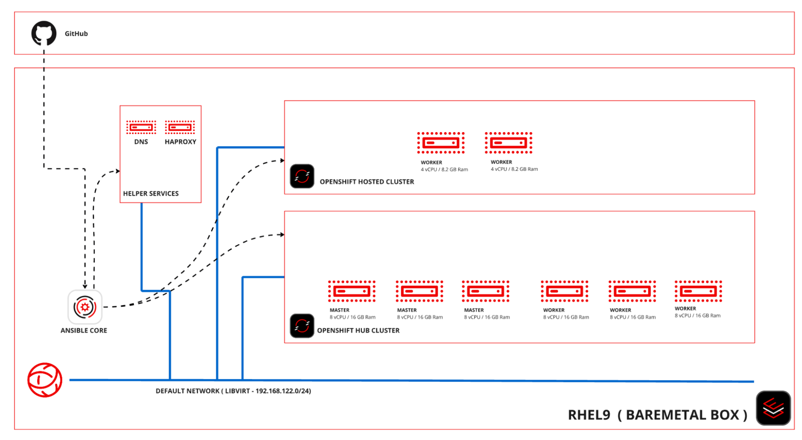
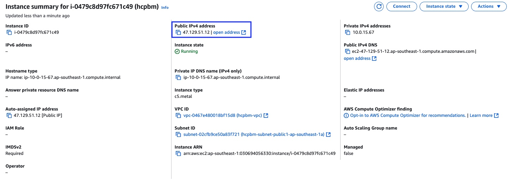
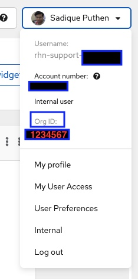
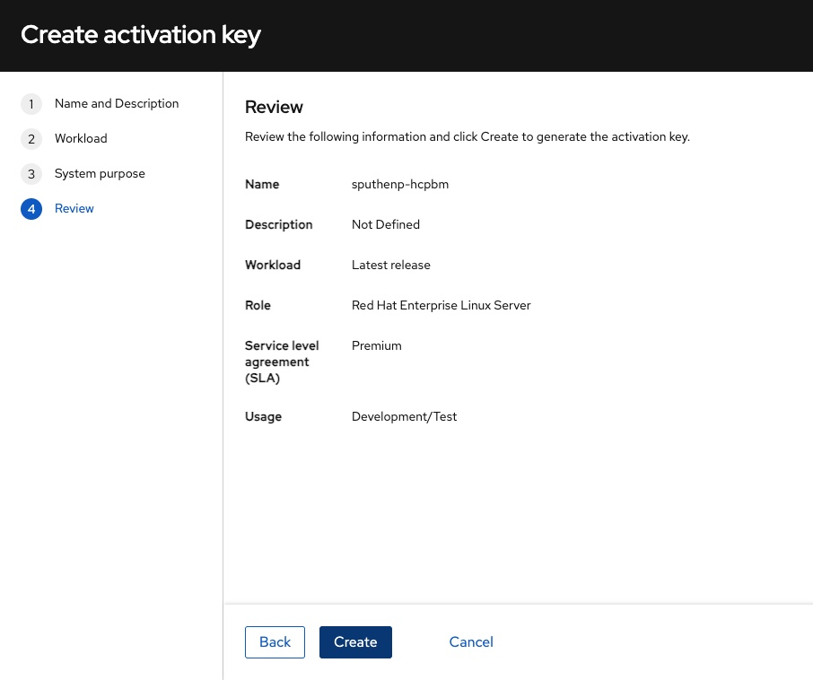
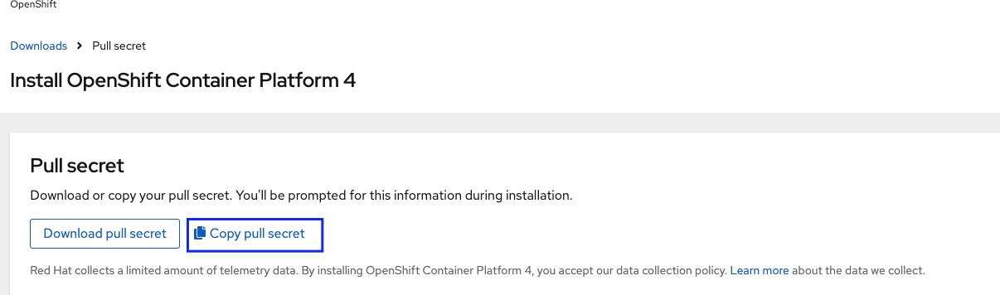

Prepare the Bare Metal Node
This lab shows how configure the bare metal host with virtual networking and a helper services VM, by using an Ansible playbook provided on a git repository. It also configures the bare metal host for graphical access, so you can run a web browser and virt-manager on the following labs.
Watch the following video and then follow the instructions in this section to perform the lab.
-
Review the architecture of the proof-of-concept for HCP on bare metal nodes .
For now, you will configure just the libvirt network and the helper services VM.
There is only one helper VM, which runs all of the DNS, HAProxy, and BOOTP daemons. -
Once the instance is up and running, SSH to the node using the private key downloaded in the previous lab.
 -
The public IP of the instance can be obtained from the AWS console after clicking on the instance.
$ ssh -i <path to the private key> ec2-user@<public ip>If your SSH client supports it, enable keep alive so the connection doesn’t terminate during long-running Ansible playbooks, killing the Ansible runner and letting your host only partially configured. $ ssh -o "ServerAliveInterval 30" -o "ServerAliveCountMax 120" -i <path to the private key> ec2-user@<public ip> -
Install Ansible Core and other supporting packages.
$ sudo -i # dnf install -y tmux waypipe # dnf groupinstall -y "Server with GUI" # dnf install -y ansible-core # ansible-galaxy collection install community.libvirt # ansible-galaxy collection install community.crypto -
Configure remote graphical access, using one of the two alternatives:
-
If your workstation runs Fedora Linux or any other Linux distribution with Wayland, you can use the
waypipecommand in front of thesshcommand that connects to your EC2 instance, and start a web browser or any other GUI application from the shell.$ waypipe ssh -o "ServerAliveInterval 30" -o "ServerAliveCountMax 120" -i <path to the private key> ec2-user@<public ip> $ firefox & -
If your workstation cannot not run Wayland, for example MacOS laptops, you can setup VNC access.
We are NOT providing instructions for installing and configuring VNC viewers on desktop operating systems. # dnf install -y tigervnc tigervnc-server # echo ":99=vncuser" >> /etc/tigervnc/vncserver.users # systemctl enable vncserver@:99 --now # useradd vncuser # su - vncuser $ vncpasswd # set a strong password Would you like to enter a view-only password (y/n)? n $ exit -
Connect to the public ip of the bare metal node on port 5999, using a VNC viewer, to get its graphical console and open a web browser.
-
The following instructions will ask you to access the Red Hat customer portal and Red Hat Hybrid Cloud Console. You can do it directly from the bare metal instance, using the graphical access you just configured, or access those sites from your workstation and them copy files to the EC2 instance.
-
-
Download latest
rhel-9.5-x86_64-kvm.qcow2cloud image (Red Hat Enterprise Linux 9.5 KVM Guest Image) from the customer portal and copy to the bare metal node.The instructions are expected to work with different versions of RHEL but were tested with RHEL 9.5. -
Clone the git repository and move the RHEL Image to the correct directory.
# git clone https://github.com/RedHatQuickCourses/hcp-on-bm-playbooks.git # cd hcp-on-bm-playbooks # cp ~vncuser/Downloads/rhel-9.6-x86_64-kvm.qcow2 roles/setup-bm-host/files/We use a fork of the original repository to ensure the reproducibility of the instructions here. The original repository may include contributions and improvements, made after creation of this course, which may interest you. -
Explore the inventory and variables and update where required.
For example, if you got a newer version of RHEL9 cloud image instead of RHEL9.5, please update the
rhel9_kvm_imagevariable.$ vi vars.yaml ... rhel9_kvm_image: rhel-9.6-x86_64-kvm.qcow2 ... -
Login on the Red Hat Hybrid Cloud Console and get your organization ID, which can be obtained by clicking your name on top right.
 -
Create an activation key from the cloud console by entering its Insights pages and note down the name of the activation key.
Use the details from the screenshot to fill the activation key details. Make sure that you name it appropriately.
 -
Copy your OpenShift pull secret from the cloud console by entering its OpenShift install page.
 -
Configure Ansible Vault to store your organization ID, activation keys, and OpenShift pull secret.
# ansible-vault create vault.yaml New Vault password: Confirm New Vault password: org_id: XXXX activation_key: YYYYY pull_secret: 'ZZZZZZZZZZZZZZZZZZZZZZZZZZZZZZZZZ' -
Set up the bare metal node by running the Ansible playbook.
$ ansible-playbook -i inventory/hosts setup_bm_host.yaml --ask-vault-pass -
Review key configuration settings that will affect our hosted clusters in the final activity.
-
You should have a single libvirt VM named
helper.# virsh list --all Id Name State ------------------------ 1 helper running -
Review the libvirt default network settings. It provides fixed IP addresses, based on MAC addresses, for six hosts, anticipating two different hosted clusters with three nodes each. You can add more if you need.
# virsh net-dumpxml default <network connections='8'> <name>default</name> <uuid>467059b1-29f1-4bfc-bb9a-1b5ae26d244c</uuid> <forward mode='nat'> <nat> <port start='1024' end='65535'/> </nat> </forward> <bridge name='virbr0' stp='on' delay='0'/> <mac address='52:54:00:c7:82:0c'/> <dns> <forwarder domain='hub.mylab.com' addr='192.168.122.21'/> <forwarder domain='hcp-cluster1.mylab.com' addr='192.168.122.21'/> <forwarder domain='hcp-cluster2.mylab.com' addr='192.168.122.21'/> <forwarder domain='122.168.192.in-addr.arpa' addr='192.168.122.21'/> </dns> <ip address='192.168.122.1' netmask='255.255.255.0'> <dhcp> <host mac='52:54:00:e2:54:21' name='helper_server.hub.mylab.com' ip='192.168.122.21'/> <host mac='52:54:00:e2:54:30' name='bootstrap.hub.mylab.com' ip='192.168.122.30'/> <host mac='52:54:00:e2:54:31' name='master1.hub.mylab.com' ip='192.168.122.31'/> <host mac='52:54:00:e2:54:32' name='master2.hub.mylab.com' ip='192.168.122.32'/> <host mac='52:54:00:e2:54:33' name='master3.hub.mylab.com' ip='192.168.122.33'/> <host mac='52:54:00:e2:54:34' name='worker1.hub.mylab.com' ip='192.168.122.34'/> <host mac='52:54:00:e2:54:35' name='worker2.hub.mylab.com' ip='192.168.122.35'/> <host mac='52:54:00:e2:54:36' name='worker3.hub.mylab.com' ip='192.168.122.36'/> <host mac='52:54:00:e2:54:39' name='hublb.hub.mylab.com' ip='192.168.122.39'/> <host mac='52:54:00:e2:54:41' name='c1worker1.hub.mylab.com' ip='192.168.122.41'/> <host mac='52:54:00:e2:54:42' name='c1worker2.hub.mylab.com' ip='192.168.122.42'/> <host mac='52:54:00:e2:54:43' name='c1worker3.hub.mylab.com' ip='192.168.122.43'/> <host mac='52:54:00:e2:54:49' name='c1lb.hub.mylab.com' ip='192.168.122.49'/> <host mac='52:54:00:e2:54:51' name='c2worker1.hub.mylab.com' ip='192.168.122.51'/> <host mac='52:54:00:e2:54:52' name='c2worker2.hub.mylab.com' ip='192.168.122.52'/> <host mac='52:54:00:e2:54:53' name='c2worker3.hub.mylab.com' ip='192.168.122.53'/> <host mac='52:54:00:e2:54:59' name='c2lb.hub.mylab.com' ip='192.168.122.59'/> <host mac='52:54:00:e2:54:71' name='c2vbmc.hub.mylab.com' ip='192.168.122.71'/> <host mac='52:54:00:e2:54:81' name='aap.hub.mylab.com' ip='192.168.122.81'/> <bootp file='pxelinux.0' server='192.168.122.21'/> </dhcp> </ip> </network> -
It also provide for three load balancer IPs, one for the hub cluster, and two for hosted clusters. If you need more, you also need to change the HAProxy settings on the helper VM.
-
Finally, it configures Libvirt’s DNS server to forward queries for the domains of the hub and two hosted clusters.
-
Open a SSH session to the helper VM and inspect open network ports. Notice the
haproxyandnameddaemons running, and also that Systemd will start an TFTP server when there’s UDP traffic to it.# ssh -i ~/.ssh/lab_rsa 192.168.122.21 # netstat -lntp # systemctl status tftp.socket # exit
-
-
Allow access to managing libvirt system VMs for your GUI user.
-
Add either the
ec2-useruser (if using waypipe) or thevncuseruser (if using a VNC viewer) to thelibvirtgroup.# usermod -aG libvirt vncuser # usermod -aG libvirt ec2-userWe recommend against enabling a VNC Viewer for the ec2-user, which is also allowed unrestricted Sudo, because the VNC protocol security is weaker than SSH. -
If using a VNC viewer, you must stop and restart your VNC desktop.
# systemctl stop vncserver@:99 # systemctl start vncserver@:99 -
If using waypipe, you must close and reconnect your SSH session.
-
In either case, check that the
libvirtgroup is on the environment of your GUI user.$ id uid=1000(ec2-user) gid=1000(ec2-user) groups=1000(ec2-user),4(adm),190(systemd-journal),984(libvirt) context=unconfined_u:unconfined_r:unconfined_t:s0-s0:c0.c1023
-